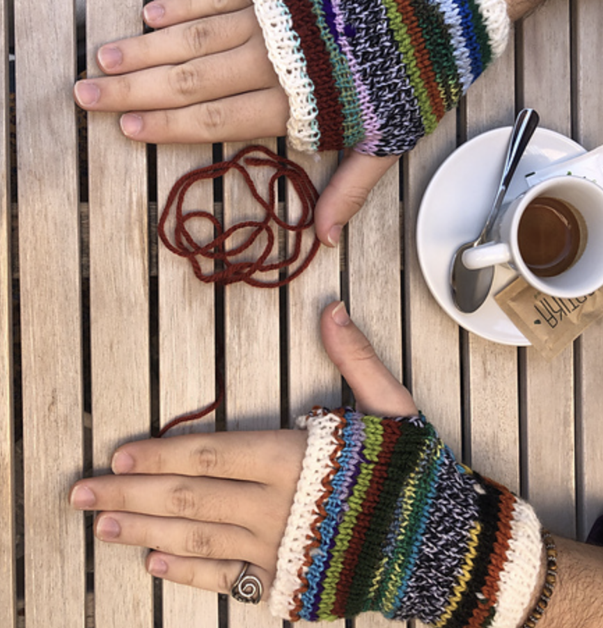
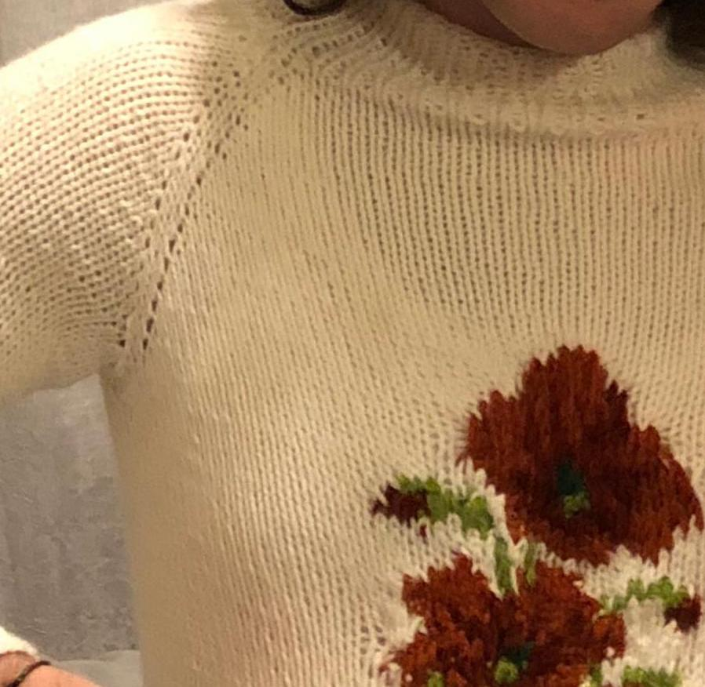
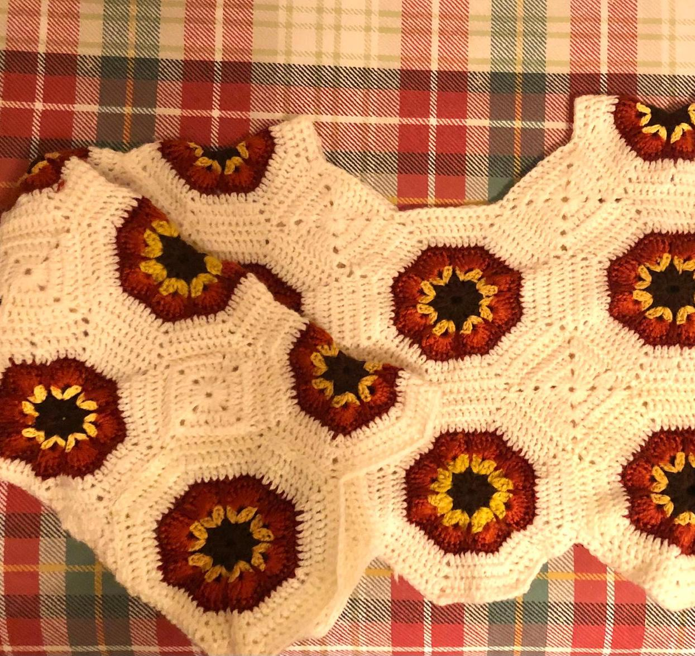
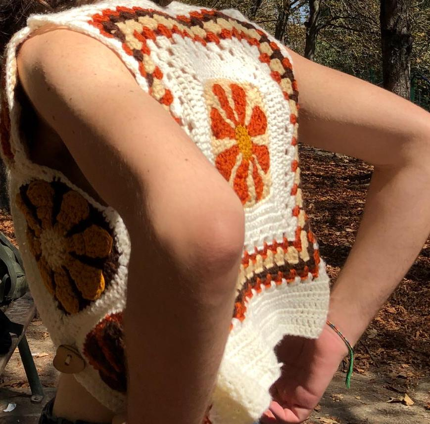
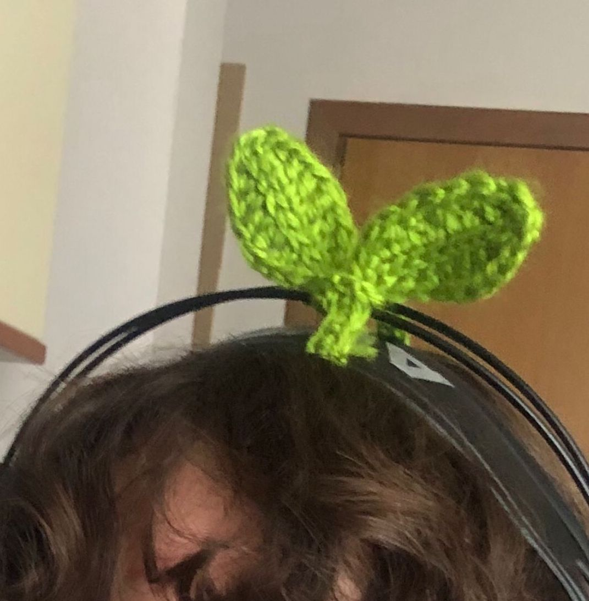
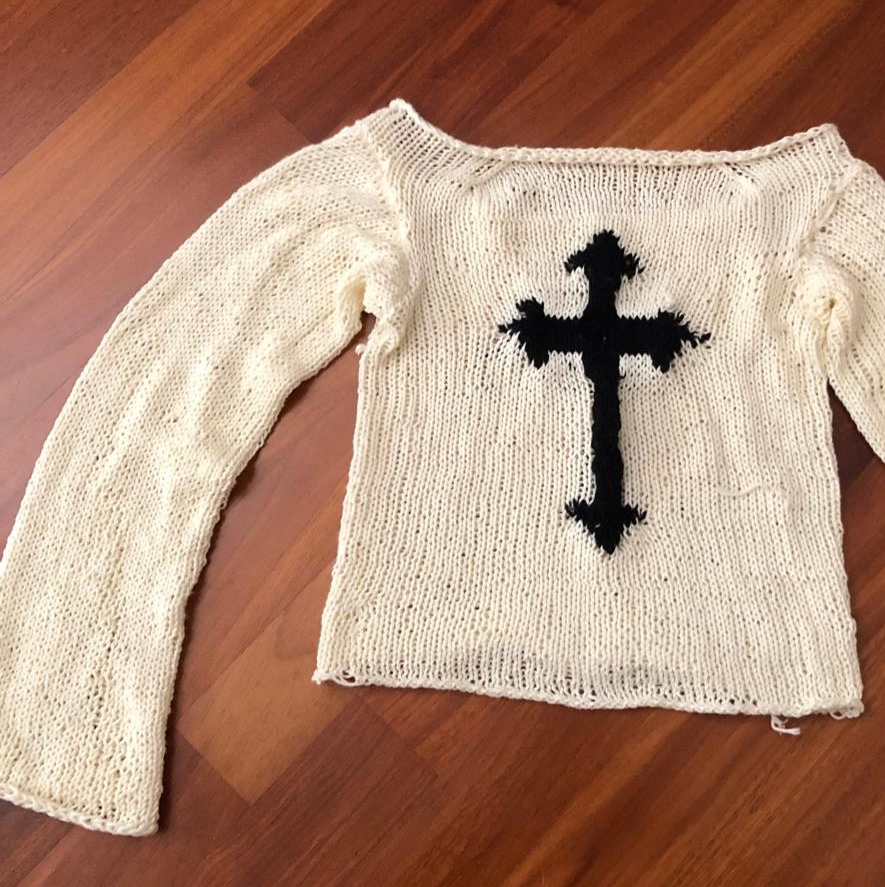

Progetti di maglieria

Missy Morning Mittens
Guantini senza dita, fatti con resti di altri filati

Maglione 18/11/23
Il maglione per il compleanno del mio ragazzo: pattern personale!

Maglione ottagonale
Creato con ottagoni floreali con motivo "afghan", alternati a quadrati

Gilet 70s
Gilet a quadrati della nonna floreali, pattern ispirato a Eric Clapton

The sprout
Fogliolina per un set di cuffie

Maglione a Croce
Progetto punk in puro cotone